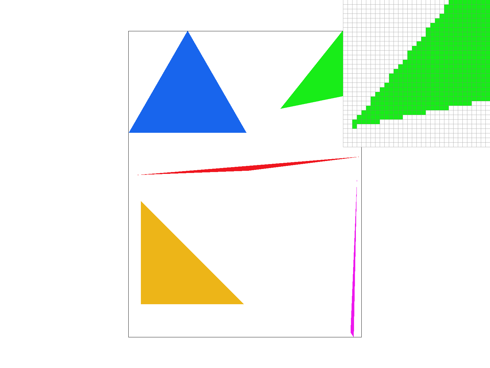
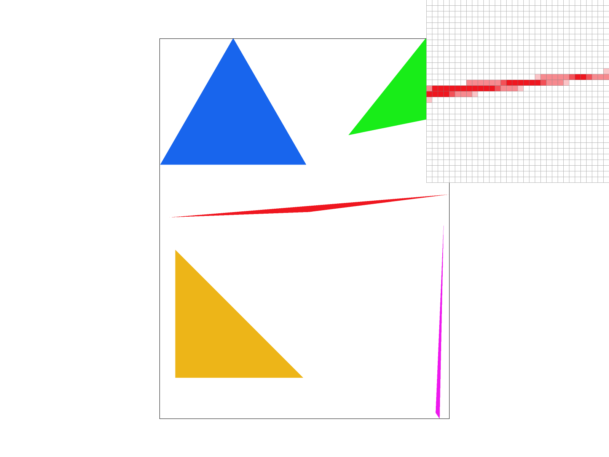
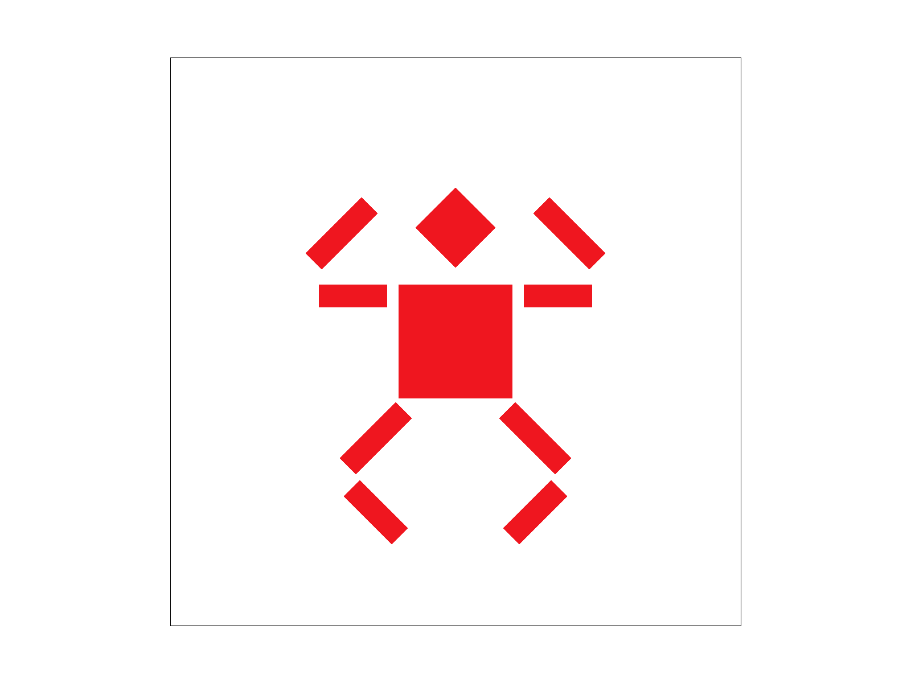
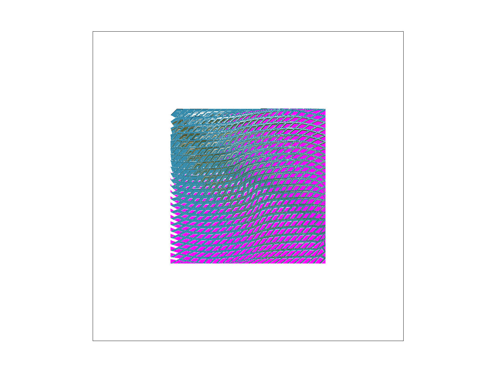
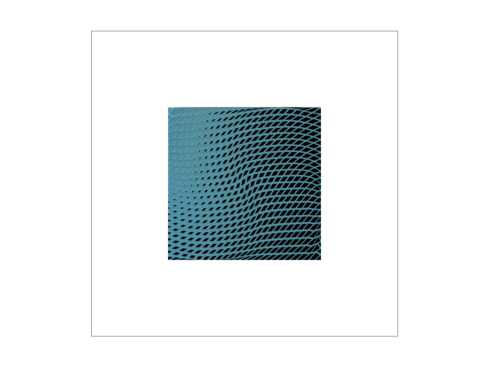

Overview
In this project, I learned how to rasterize triangles using barycentric coordinates with various colors and textures.
I implemented different sampling rates and made transformation matrices in order to alter shapes.
My favorite part of this project was probably making the little robot do a squat.
It was so cool to directly see the code I wrote produce a result just by changing a few lines.
Due to a lot of scheduling conflicts with office hours, I was not able to get the help I needed and couldn’t complete tasks 5 and 6 before the deadline,
but I think I made somewhat decent progress on at least understanding them, and was pretty close to figuring them out completely.
Overall, I feel like I more or less understand the concepts behind what we were doing in this project but I felt pretty lost on some of the implementation.
I hope I am able to better manage my time for the future assignments so that I can complete all the tasks by the given deadline.
Section I: Rasterization
Part 1: Rasterizing single-color triangles
To start, because rasterizing triangles is the basis for many of the functions for the rest of the project and will be called many, many times, I did not want to call a helper function for each pixel that had to be checked. Keeping that in mind, I chose to rasterize by creating a bounding box around the triangle using the lowest x, y values and the highest x, y values provided, and then used the barycentric coordinates to determine which points in that bounding box were within the triangle. Since I am actually just checking each sample within the bounding box, my algorithm is not worse than that. With performance in mind, I also moved repeated calculations used in the barycentric coordinates before the loop so that I could avoid unnecessary work at each step of the loop.
|

|
Part 2: Antialiasing triangles
For task 2, the first thing I did was modify the sample_buffer and sample_rate so that it changes according to the provided rate. Then, in rasterize_triangle() I modified the inputted triangle vertices to scale with the square root of the sample rate in order to treat my image as if it was larger. Next, while resolving the samples into the frame buffer, I iterated through the supersampled x and y values at each coordinate point to save the average of their prospective colors, which is then fed into the frame buffer. Finally, I modified the fill_point function to also scale with the provided sample rate. It is clear by looking at the results of rasterization at different sample rates that supersampling smooths harsh edges and lowers the amount of jaggies rendered, vastly improving the look of the shape from far away.
|
|

|
|
Part 3: Transforms
|

|
Section II: Sampling
Part 4: Barycentric coordinates
Barycentric coordinates are a method to approximate location within a triangle via linear interpolation given some (x,y) coordinates. It can be used to create a gradient of colors or determine if a point is within a triangle, and it is computationally quite cheap compared to other methods of this approximation as many of the calculations can be reused across iterations if the triangle doesn’t change.

|
Part 5: "Pixel sampling" for texture mapping
Pixel sampling is when you check the nearest pixels to your target and then weight their values to output a result that best suits what you are trying to represent. Nearest pixel sampling just checks the nearest neighbor pixels to get this value, while bilinear sampling uses interpolation to check the nearest values and then weight them by their proximity. Because I wasn’t able to complete this section of the assignment, I do not have a good example of this in action, unfortunately. Here is what my results look like:
|

|
As you can see, this isn't correctly applying the texture. I suspect this isn't working because the u and v values were not scaled correctly before being passed into the sample function, or I am scaling by the incorrect level of my mipmaps and that is resulting in many out-of-bounds failures.
Part 6: "Level sampling" with mipmaps for texture mapping
Level sampling changes the level of the mipmap that you are accessing in order to generate a higher or lower resolution texture according to your needs. There are three ways we implemented level sampling in this project. We either picked the highest resolution (level 0) mipmap, used the relative change of our (u, v) value to determine the level of mipmap we should access, or used linear interpolation to pick the weighted best level of our mipmap to sample. Because I wasn't able to get Task 5 working, it was difficult to determine whether the progress I made on Task 6 was actually having any effect on the images I was trying to render. In general though, by increasing the resolution of the image we are sampling, or the number of pixels we are sampling, we are going to have a sharper and better-looking image but also have to spend more time and memory to compute it. I personally think that interpolated images look much better and have a very noticeable reduction in jaggies compared to the other sampling images, and when our triangles don’t change much it is actually not so expensive to compute because you can reuse a lot of the same calculations.
|

|
Section III: Art Competition
If you are not participating in the optional art competition, don't worry about this section!